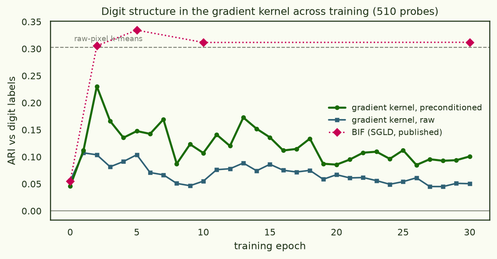
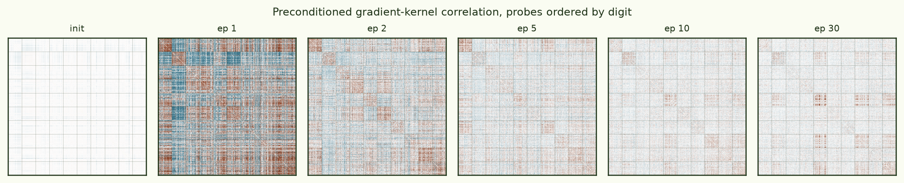
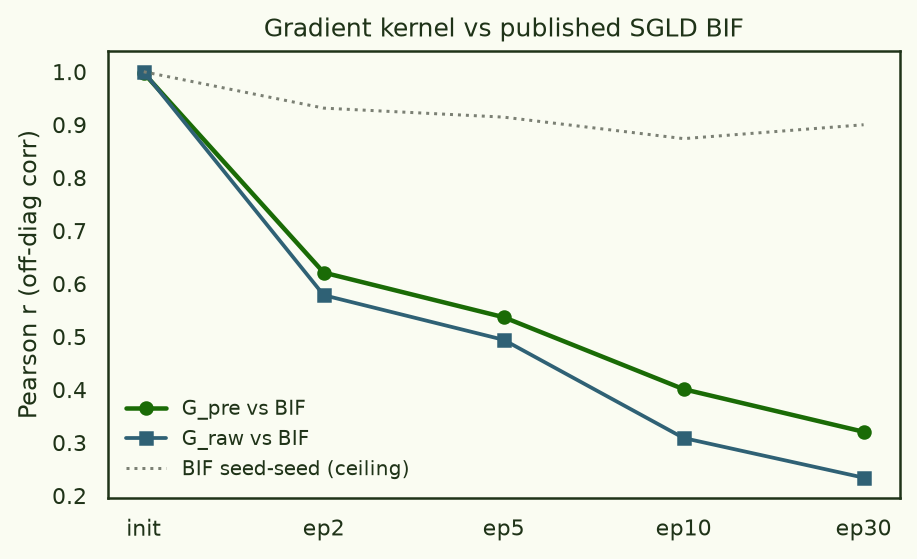
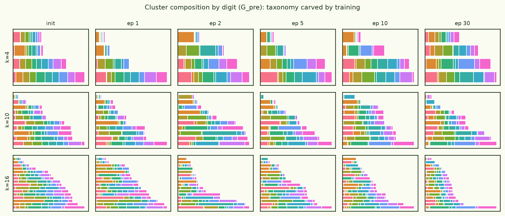
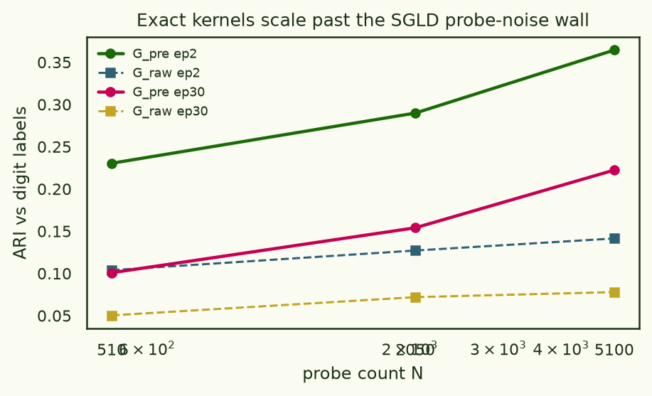

MNIST across training: the gradient kernel is the BIF at init — and something else at convergence
The BIF thread's foundation page clustered the loss-landscape kernel of a pixel-level autoregressive MNIST transformer at every checkpoint and found the digit taxonomy carved during training — via SGLD sampling, at real cost per cell, gated on seed agreement. Its epoch-0 control couldn't use SGLD at all (no stable local posterior at a random init) and fell back on the γ→∞ limit of the localised BIF: the raw gradient Gram. This page runs that limit object — plus the Adam-style version — at all 31 checkpoints of the very same training run, on the very same 510 probes, with the very same spectral-clustering protocol, and compares against the published SGLD numbers point for point. Deterministic, no chains, no gate: ~18 s per checkpoint.
At initialisation the gradient kernel is the BIF (off-diagonal r = 0.9999996 against the published epoch-0 cell). As training converges they part ways: the gradient kernel's digit structure peaks at epoch 2 (ARI 0.23) and fades to 0.10 by epoch 30, while the SGLD BIF holds flat at ≈0.31. Point gradients and posterior curvature are the same probe of a young landscape and different probes of a converged one.


The mechanism is in the kernel spectra. At init the kernel is one common mode (stable rank reff = 1.0; top eigenvalue carries 98% of the trace — every random-init gradient points the same way, and what clustering there is lives in the residual). At epoch 2 the kernel is genuinely class-structured: reff ≈ 26 with digit blocks carrying the spectrum. By epoch 30, reff ≈ 90–110: a converged model's per-image gradients are nearly-orthogonal idiosyncratic residuals — the loss is minimised, the shared class directions are trained away, and what remains of each gradient is that image's private noise. The SGLD BIF doesn't inherit this fade because it never measures the point gradient: it samples the basin, whose curvature keeps encoding which images share mechanisms after their gradients have shrunk into noise.

This resolves cleanly against the ImageNet capstone, which found the opposite-sounding result — there, the preconditioned gradient kernel contained the loss kernel's geometry and beat it downstream. No contradiction: ImageGPT and Inception are one-to-two-epoch models over huge corpora, nowhere near the zero-gradient regime; this 30-epoch MNIST toy actually converges (test loss flat to 0.001 bits/pixel for the last five epochs). The gradient kernel's validity window is "gradients still carry signal" — which covers essentially every practically-trained large model, and stops covering a toy ground to its minimum. If you want landscape structure at such a minimum, that is the one regime where the SGLD machinery earns its 545× premium.


All 31 checkpoints cost 17 minutes ≈ $0.21 on one mid-tier card — ~18 s per checkpoint against ~3 GPU-hours per published BIF cell: ×545 cheaper, with no step-size calibration, no burn-in, no seed gate, and exact reproducibility.
Positioning: Timaeus showed per-sample landscape information clustering MNIST digits across (epoch × temperature) with per-sample LLCs, and their Loss Kernel paper sweeps checkpoint structure on ImageNet; He & Su clustered MNIST classifiers with an NTK-flavored gradient similarity at a single snapshot. The combination here — deterministic exact gradient Gram, autoregressive generative model, the published BIF protocol swept over every checkpoint with a direct cell-by-cell agreement curve — appears to be new, and the punchline is two-sided rather than triumphalist: the cheap deterministic object replicates the expensive sampled one exactly where they coincide by construction (init), tracks it closely through early training, and measurably stops being the same thing at a converged minimum.
- model
- PixelTransformer d128 · 4L · 4H · pixel-CE, 16 levels, 784-pixel raster AR (P ≈ 0.8M) — the BIF thread's exact checkpoints, epochs 0–30, from HF
- probes
- the BIF run's exact 510 (51/class, test split; byte-identical indices), scaling arm to 2,050/5,100
- rows
- per-image gradient of summed per-pixel NLL, fp32; preconditioner q = 1/(v+ε), v from 1,024 disjoint train images per checkpoint
- clustering
- published protocol verbatim: correlation → clip(r,0,1) affinity → spectral k=10 (+ k = 2–16 sweep) → ARI/NMI vs digits
- agreement
- off-diag Pearson vs published BIF cells (z-normed, seed-averaged); init gate 0.9999996 before anything else was trusted
- cost
- 12.4 s grads + 5.6 s moments per checkpoint; 31 checkpoints ≈ 17 min ≈ $0.21
- artifacts
- HF
arcadia-impact/gradient-kernel-mnist-dynamics-20260714(all kernels, moments, analysis JSONs, figures); codeexperiments/mnist_dynamics/@ fba585b